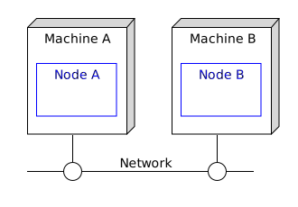

HA : Cluster aware state filter
This sample describes how to deploy an EventFlow fragment in a 2-node cluster aware configuration.
- Machines and nodes
- Define the node deployment configuration
- Design notes
- Failure scenarios
- Building this sample from the command line and running the integration test cases
Machines and nodes
In this sample we name the machines as A, which hosts the StreamBase node A, and B, which hosts the StreamBase node B.

Define the node deployment configuration
This sample uses no special node deployment configurations, so node deployment configuration file is not required.
Design notes
- The event flow fragment defines that only one state filter operator is running in the cluster
Failure scenarios
The main failure cases for this deployment are outlined below :
| Failure case | Behavior on failure | Steps to resolve | Notes |
|---|---|---|---|
| Machine A fails | State filter operator on node B is automatically started | 1 Fix machine A 2 Use epadmin install node and epadmin start node 3 Note that the operator remains running on node B |
1 No data loss 2 No service loss |
| Machine B fails | No impact | 1 Fix machine B 2 Use epadmin install node and epadmin start node |
1 No data loss 2 No service loss |
With a 2 node configuration node quorums don’t apply hence a multi-master scenario is possible on network failure. Multiple network paths ( such as network bonding ) is recommended.
Building this sample from the command line and running the integration test cases
In this sample, some HA integration test cases are defined in the pom.xml that :
- start nodes A & B
- use epadmin display operator to check the operator status on both nodes ( state filter operator is started on node A only )
- stop node A
- use epadmin display operator to check the operator status on both nodes ( state filter operator is now started on node B )
- stop node B
Warning: This does not constitute an exhaustive non-functional test plan
Use maven as mvn install to build from the command line or Continuous Integration system :
Copyright (c) 2018-2019, TIBCO Software Inc.
Redistribution and use in source and binary forms, with or without modification, are permitted provided that the following conditions are met:
-
Redistributions of source code must retain the above copyright notice, this list of conditions and the following disclaimer.
-
Redistributions in binary form must reproduce the above copyright notice, this list of conditions and the following disclaimer in the documentation and/or other materials provided with the distribution.
-
Neither the name of the copyright holder nor the names of its contributors may be used to endorse or promote products derived from this software without specific prior written permission.
THIS SOFTWARE IS PROVIDED BY THE COPYRIGHT HOLDERS AND CONTRIBUTORS “AS IS” AND ANY EXPRESS OR IMPLIED WARRANTIES, INCLUDING, BUT NOT LIMITED TO, THE IMPLIED WARRANTIES OF MERCHANTABILITY AND FITNESS FOR A PARTICULAR PURPOSE ARE DISCLAIMED. IN NO EVENT SHALL THE COPYRIGHT HOLDER OR CONTRIBUTORS BE LIABLE FOR ANY DIRECT, INDIRECT, INCIDENTAL, SPECIAL, EXEMPLARY, OR CONSEQUENTIAL DAMAGES (INCLUDING, BUT NOT LIMITED TO, PROCUREMENT OF SUBSTITUTE GOODS OR SERVICES; LOSS OF USE, DATA, OR PROFITS; OR BUSINESS INTERRUPTION) HOWEVER CAUSED AND ON ANY THEORY OF LIABILITY, WHETHER IN CONTRACT, STRICT LIABILITY, OR TORT (INCLUDING NEGLIGENCE OR OTHERWISE) ARISING IN ANY WAY OUT OF THE USE OF THIS SOFTWARE, EVEN IF ADVISED OF THE POSSIBILITY OF SUCH DAMAGE.